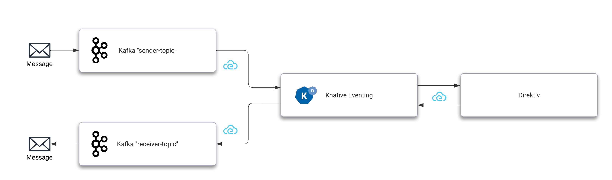

Kafka Example
This example uses Kafka as Knative event broker and event source and sink as well. After receiving a message from Kafka, Knative forwards it to Direktiv which subsequently initiates a flow and publishes an event back to Knative which will broker the event to a receive topic in Kafka. To run this example the following steps are required:
- Installing Kafka
- Installing Knative with Kafka
- Configure Kafka Source
- Configure Direktiv Source
- Configuring Kafka Sink
- Flow
Example Versions
The version numbers in this example might have changed over time. Please make sure to update them accordingly if required.

Installing Kafka
To enable Knative Eventing in a production environment, Knative requires the installation of an event broker. By setting up triggers and subscriptions, Knative brokers like RabbitMQ or Kafka can build an event mesh architecture. Here we will be using Kafka and the Strimzi Operator for the installation. This is a two-step process, installing the Kafka operator and creating the Kafka cluster itself.
kubectl create namespace kafka
kubectl create -f 'https://strimzi.io/install/latest?namespace=kafka' -n kafka
kubectl wait --for=condition=ready pod -l name=strimzi-cluster-operator -n kafka --timeout=300s
Kafka Installation
The Kafka installation instructions provided here is just an example and can not be used as-is in production environments. Please go to https://strimzi.io for full documentation.
After the operator is running the following command enables KRaft for the operator. This allows an installation without Zookeeper and should simplify this setup.
kubectl -n kafka set env deployment/strimzi-cluster-operator STRIMZI_FEATURE_GATES=+UseKRaft
kubectl wait --for=condition=ready pod -l name=strimzi-cluster-operator -n kafka --timeout=300s
The following command will create the actual Kafka cluster which will be used in this example.
cat <<-EOF | kubectl apply -f -
---
apiVersion: kafka.strimzi.io/v1beta2
kind: Kafka
metadata:
name: my-cluster
namespace: kafka
spec:
kafka:
version: 3.4.0
replicas: 1
listeners:
- name: plain
port: 9092
type: internal
tls: false
- name: tls
port: 9093
type: internal
tls: true
config:
offsets.topic.replication.factor: 1
transaction.state.log.replication.factor: 1
transaction.state.log.min.isr: 1
default.replication.factor: 1
min.insync.replicas: 1
inter.broker.protocol.version: "3.4"
storage:
type: ephemeral
zookeeper:
replicas: 1
storage:
type: ephemeral
EOF
Knative with Kafka
To use Kafka as the underlying mechanism for message brokering Knative needs to be configured during installation. The YAML here will create Knative Eventing instance with the required settings.
cat <<-EOF | kubectl apply -f -
---
apiVersion: v1
kind: Namespace
metadata:
name: knative-eventing
---
apiVersion: operator.knative.dev/v1beta1
kind: KnativeEventing
metadata:
name: knative-eventing
namespace: knative-eventing
spec:
config:
config-br-default-channel:
channel-template-spec: |
apiVersion: messaging.knative.dev/v1beta1
kind: KafkaChannel
spec:
numPartitions: 6
replicationFactor: 1
default-ch-webhook:
default-ch-config: |
clusterDefault:
apiVersion: messaging.knative.dev/v1beta1
kind: KafkaChannel
spec:
numPartitions: 10
replicationFactor: 1
EOF
This installation requires the Knative Kafka controller and data plane as well. This can be installed with two kubectl commands.
kubectl apply --filename https://github.com/knative-sandbox/eventing-kafka-broker/releases/download/knative-v1.9.3/eventing-kafka-controller.yaml
sleep 3
kubectl apply --filename https://github.com/knative-sandbox/eventing-kafka-broker/releases/download/knative-v1.9.3/eventing-kafka-broker.yaml
The last step is to create the actual broker. The following two commands are creating the broker configuration and the broker using the configuration.
cat <<-EOF | kubectl apply -f -
---
apiVersion: v1
kind: ConfigMap
metadata:
name: kafka-broker-config
namespace: knative-eventing
data:
default.topic.partitions: "10"
default.topic.replication.factor: "1"
bootstrap.servers: "my-cluster-kafka-bootstrap.kafka:9092"
EOF
cat <<-EOF | kubectl apply -f -
---
apiVersion: eventing.knative.dev/v1
kind: Broker
metadata:
annotations:
eventing.knative.dev/broker.class: Kafka
name: default
namespace: knative-eventing
spec:
config:
apiVersion: v1
kind: ConfigMap
name: kafka-broker-config
namespace: knative-eventing
EOF
The Kafka broker is now up and running. The setup can be tested with kubectl.
kubectl get brokers.eventing.knative.dev
NAME URL AGE READY REASON
default http://kafka-broker-ingress.knative-eventing.svc.cluster.local/default/default 16m True
Configuring Kafka Source
Kafka will be an event source and a sink in this example. Therefore we need two channels. One channel sending messages and a second channeld to receive the outcome of the whole message process.
cat <<-EOF | kubectl apply -f -
---
apiVersion: kafka.strimzi.io/v1beta2
kind: KafkaTopic
metadata:
name: sender-topic
namespace: kafka
labels:
strimzi.io/cluster: my-cluster
spec:
partitions: 3
replicas: 1
config:
retention.ms: 7200000
segment.bytes: 1073741824
---
apiVersion: kafka.strimzi.io/v1beta2
kind: KafkaTopic
metadata:
name: receiver-topic
namespace: kafka
labels:
strimzi.io/cluster: my-cluster
spec:
partitions: 3
replicas: 1
config:
retention.ms: 7200000
segment.bytes: 1073741824
EOF
kubectl get kafkatopics.kafka.strimzi.io -n kafka
With that setup a Kafka source can be installed which will trigger the event flow. This YAML creates the source which sends all messages to the Kafka broker. This shows the decoupling of the events. The producer or sender is unaware of the receiver(s) of the message.
kubectl apply -f https://github.com/knative-sandbox/eventing-kafka-broker/releases/download/knative-v1.9.3/eventing-kafka-source.yaml
cat <<-EOF | kubectl apply -f -
---
apiVersion: sources.knative.dev/v1beta1
kind: KafkaSource
metadata:
name: direktiv-kafka-source
namespace: knative-eventing
spec:
consumerGroup: knative-group
bootstrapServers:
- my-cluster-kafka-bootstrap.kafka:9092
topics:
- sender-topic
sink:
ref:
apiVersion: eventing.knative.dev/v1
kind: Broker
name: default
EOF
kubectl get kafkasources.sources.knative.dev
NAME TOPICS BOOTSTRAPSERVERS READY REASON AGE
direktiv-kafka-source ["sender-topic"] ["my-cluster-kafka-bootstrap.kafka:9092"] True 4m16s
With this source enabled Knative can receive events but it requires a trigger to have another system consume the event. A trigger is a simple mechnism in Knative to "forward" certain events to subscribers. In this YAML there is a trigger filter defined this trigger consumes all events of type dev.knative.kafka.event and forwards it to Direktiv's direktiv-eventing service. The uri value specifies the target namespace in Direktiv. For more information about eventing filters visit the Knative documentation page about filters.
cat <<-EOF | kubectl apply -f -
---
apiVersion: eventing.knative.dev/v1
kind: Trigger
metadata:
name: direktiv-in
namespace: knative-eventing
spec:
broker: default
filter:
attributes:
type: dev.knative.kafka.event
subscriber:
ref:
apiVersion: v1
kind: Service
name: direktiv-eventing
uri: /direktiv
EOF
This setup can already send events to a namespace called direktiv if data arrives at the sender-topic topic in Kafka. This can be easily tested if the namespace direktiv already exists in Direktiv. To test it we start a pod which connects to the sender topic.
kubectl -n kafka run kafka-producer -ti --image=quay.io/strimzi/kafka:latest-kafka-3.4.0 --rm=true --restart=Never -- bin/kafka-console-producer.sh --broker-list my-cluster-kafka-bootstrap.kafka:9092 --topic sender-topic
After running the pod add JSON into the command prompt, e.g. {}. This sends the JSON object to Kafka. Knative's broker will pick up the message and execute the trigger for Direktiv. The event will appear on the direktiv namespace dashboard.

Configuring Direktiv Source
To connect Direktiv back to Knative we need to install direktiv-knative-source. This source listens to events generated in Direktiv and pushes them to Knative. In this example the message is pushed back to the broker which can then use triggers to distribute the event. The required argument for this source is the direktiv URI within the cluster, e.g. direktiv-flow.default:3333.
cat <<-EOF | kubectl apply -f -
---
apiVersion: sources.knative.dev/v1
kind: ContainerSource
metadata:
name: direktiv-source
namespace: knative-eventing
spec:
template:
spec:
containers:
- image: vorteil/direktiv-knative-source
name: direktiv-source
args:
- --direktiv=direktiv-flow.default:3333
sink:
ref:
apiVersion: eventing.knative.dev/v1
kind: Broker
name: default
EOF
Configuring Kafka Sink
The last step is to create a Kafka sink which consumes the event coming from Direktiv. This closes the communication cycle from Kafka to Direktiv and back to Kafka again. For this to work a Kafka sink has to be installed.
kubectl apply -f https://github.com/knative-sandbox/eventing-kafka-broker/releases/download/knative-v1.9.3/eventing-kafka-sink.yaml
cat <<-EOF | kubectl apply -f -
---
apiVersion: eventing.knative.dev/v1alpha1
kind: KafkaSink
metadata:
name: direktiv-kafka-sink
namespace: knative-eventing
spec:
topic: receiver-topic
bootstrapServers:
- my-cluster-kafka-bootstrap.kafka:9092
EOF
Sink Topic
Send a message to the receiver-topic if the sink reports an error about a missing topic:
kubectl -n kafka run kafka-receiver -ti --image=quay.io/strimzi/kafka:latest-kafka-3.4.0 --rm=true --restart=Never -- bin/kafka-console-producer.sh --broker-list my-cluster-kafka-bootstrap.kafka:9092 --topic receiver-topic
After installing the sink a trigger is required to tie them together. A filter can applied to that trigger as well. In this case the trigger accepts events if the type of the cloudevent is myevent.
cat <<-EOF | kubectl apply -f -
---
apiVersion: eventing.knative.dev/v1
kind: Trigger
metadata:
name: direktiv-receive
namespace: knative-eventing
spec:
broker: default
filter:
attributes:
type: myevent
subscriber:
ref:
apiVersion: eventing.knative.dev/v1alpha1
kind: KafkaSink
name: direktiv-kafka-sink
EOF
Flow
After all components are installed and connected a flow in Direktiv is required to actually transfrom the message and send it back. The example flow in the direktiv namespace here will listen to all dev.knative.kafka.event events and return the event under the new attribute x.
start:
type: event
state: tellme
event:
type: dev.knative.kafka.event
states:
- id: tellme
type: generateEvent
event:
type: myevent
source: Direktiv
data:
x: jq(."dev.knative.kafka.event".data)
With that setup a new message e.g. "Hello" on the sender-topic queue should show as { "x": { "Hello" }} in the receiver topic. Please make sure to send valid JSON because this is being used as the data playload for the event.
kubectl -n kafka run kafka-consumer -ti --image=quay.io/strimzi/kafka:latest-kafka-3.4.0 --rm=true --restart=Never -- bin/kafka-console-consumer.sh --bootstrap-server my-cluster-kafka-bootstrap:9092 --topic receiver-topic --from-beginning